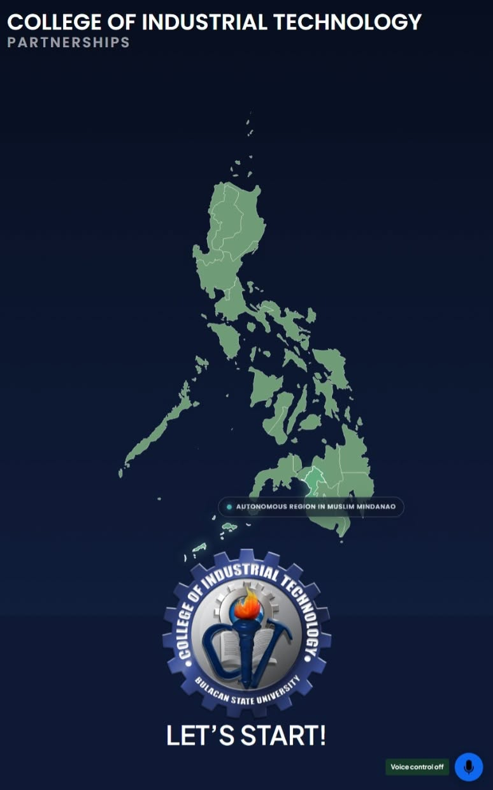

Junior Front-End Web Developer Intern at Bulacan State University - College of Industrial Technology. Ready to build high-performance web experiences.
Bulacan State University - College of Industrial Technology
Bachelor of Science in Industrial Technology (BSIT)
Major in Computer Technology
Bulacan State University (2023 - 2027)
Dedicated and detail-oriented CIT student proficient in rapid AI-assisted prototyping, responsive web design, and modern UI frameworks. Eager to bring strong technical work ethic to a 486-hour OJT placement.
Tools and technologies mastered during my academic training
Selected laboratory outputs and independent system developments

A accessible and interactive platform for presenting information about the institution’s local and international partner establishments, including their locations and relevant partnership details.
Interested in bringing me onto your team for OJT? Let's connect.
Malolos / Bulacan / Metro Manila / Remote